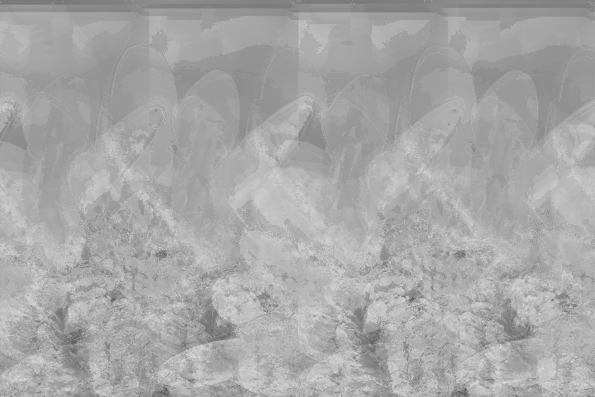
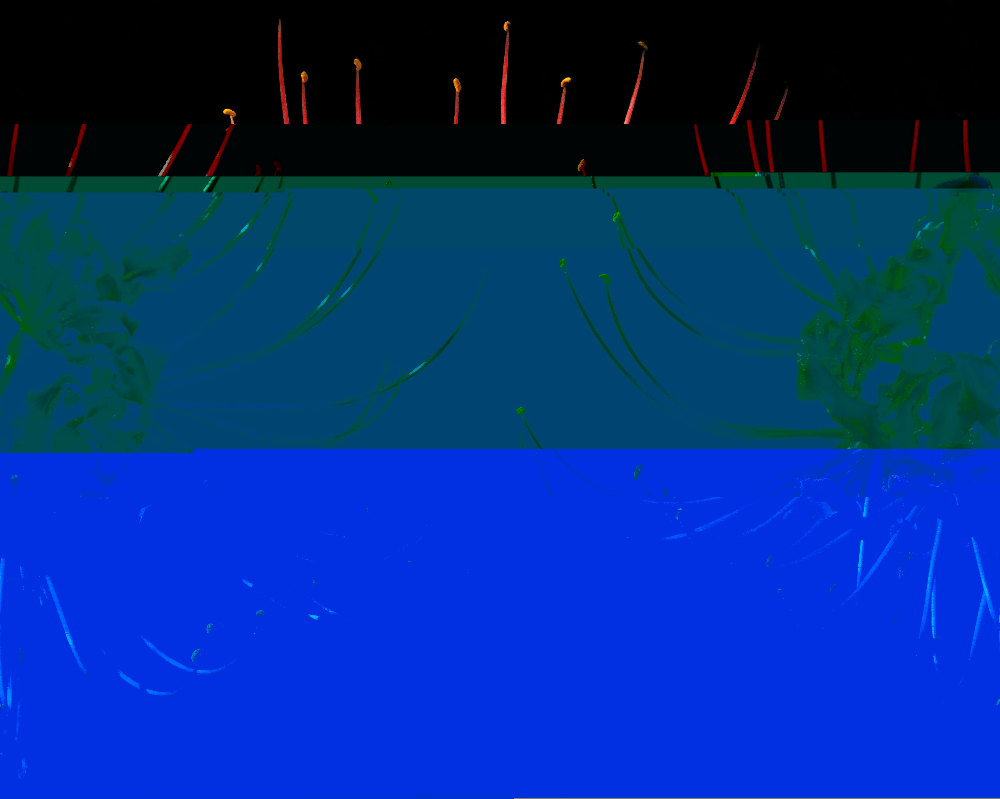
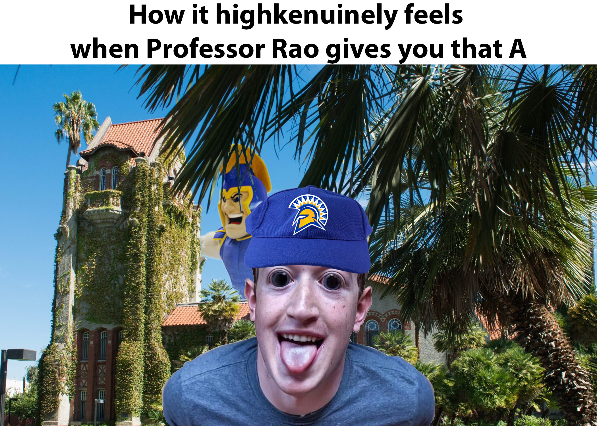

ART 74, or Intro to Digital Media, is a class offered at SJSU that explores how art and technology intersect, the evolution of new media, and how new media can be used to create meaningful and purposeful art. The following works are some of the projects completed for this class.

Digital, Adobe Photoshop, Audacity, Notepad++, 1195 px X 798 px, 2026
Digital, Notepad++, 644 px X 476 px, 2026

Digital, Notepad++, 3986 px X 3188 px, 2026
"Rotting" is a series of 3 different glitch art of flowers of varying digital sizes manipulated and
changed via
notepad++ and audacity. The flowers are digitally manipulated and show sections of the images gone,
altered in
color, or repeated.
The subjects of this work are flowers as I thought their representation of death was
similar yet opposite to glitch art. I thought they were similar in the terms that digital media is
not always
permanent. If something crashes, is unsaved, saved to only one device or uncared for overtime
leading to code
rot, the piece of media is gone. However, glitch art is also the opposite to death, as it gives
digital media
new life by creating something new out of something that already exists. I chose 3 different images
of flowers
from the Bing search engine to explore how different image sizes are affected by the inclusion or
exclusion of
data when manipulated in notepad++. I did this a few times to each image until it created an image I
was
satisfied with. When the largest file (Chrysanthemum) proved to be difficult to manipulate via
notepad++, I put the
file through
audacity and created this new image. In notepad++, I deleted various lines, added various texts, and
copied and
pasted text to change how these images appeared. For audacity, I input the image file, put an effect
on the
audio file and placed the file into photoshop to produce the final result.
My work is titled "Untitled" and it is a visual mashup of various components including a digitally
manipulated
image of Mark Zuckerberg, shown to be wearing a SJSU hat in front of Tower Hall with Sammy in the
background
faded into the sky. I named it Untitled as memes often take a life of their own, away from their
original
message, and are often named by the internet. I have left it that way for it to be named by
others as they
have their own take on it.
Using images I found on the internet via the search engine
Bing, I
created Untitled. There are several known components found in this image. Firstly, the format of
white block at
the top of the image with black text is a common meme format. The Mark Zuckerberg image is a common
image of
Mark Zuckerberg that is shared across various social media platforms especially due to the bizarre
facial
expression in contrast to the professional persona Zuckerberg is known for. Lastly, there
are several
components representing SJSU including Sammy, Tower Hall, and the SJSU hat. All of these components
together
create a new meaning, with Mark Zuckerberg representing a SJSU student receiving a good letter grade
from a SJSU
professor. I created this image by quick masking the Mark Zuckerberg image to copy and paste on to
the SJSU
background. The rest of the other components are transparent images that I copied and pasted on to
the piece.
For Sammy, I used the color select masking method so that I
could put Sammy
behind the leaves of the trees easily. In order to distort Mark Zuckerberg's face, I utilized the
warp
and bloat feature to create the odd smile and the enlarged eyes.
This image creates a statement by acting as a representative of an SJSU student and emphasizing it
through
bizarreness. Firstly, Mark Zuckerberg, the CEO of Meta and a billionaire, is depicted as a
SJSU student,
a far cry in terms of socioeconomic status. The odd face that Zuckerberg is shown to be making in
the picture
from digital manipulation further makes his placement odd. By placing the SJSU hat on top and adding
the caption
“How it highkenuinely feels when Professor Rao gives you an A” puts Zuckerberg in the context of not
just any
SJSU student, but the viewer. The term highkenuinely (highkey + genuinely) further creates a sense
of
bizarreness by using a slang term in context of a letter grade as well as with Zuckerberg, who had
been
mentioned earlier to be a professional individual. Regardless of the viewer's affilication or
non-affilition with SJSU, this image acts as a form of relatable content.

Digital, Adobe Photoshop, 2100 px X 1500 px, 2026
Digital, Google Colab, Primere Cut Pro, 1195 px X 798 px, 2026
I titled my work "The American Dream" as it is a commentary on the false hopes of the American Dream
given to
people living in the United States. It is a combination of an image of a Coke can, a video of a
1950s "nuclear"
family, and audio from a 1950s suburban life.
I first became interested in my topic as the Time-Based mashup reminded me of a study that I had
heard of a long
time ago about subliminal messages in film. It was roughly along the lines of how a single coke
drink put in a
frame of a movie every second is enough for the conscious mind to not notice it but the subconscious
mind would,
leading to people wanting to get a drink during the movie. I thought this was an interesting
concept. Coca Cola
is something that I see as a representation of American culture in terms of both social culture and
capitalism.
As a result, I combined the image of the Coke can that I found from the search engine Bing with the
image of the
“perfect” suburban nuclear family from the 1950s from the youtube video “1950s USA, Nuclear Family,
Unpacking
Groceries, Americana, 16mm” by Kinolibrary. In combination with the Coke can, I felt that the two concepts
were the
representation of American culture. I combined these two using the method in the “working with
frames lab”.
Then, from the youtube video “Living the American Dream, 1950s Suburban Life” by Kinolibrary, I took
the audio
talking about the ideal American home by downloading it as an mp4 via the Google Colab shared with
us. The
ending audio of the clip “new home” is repeated over and over again with glitched images of the coke
can shown.
I repeated the audio by taking the short clip and duplicating it so it could be played over and over
again. I
glitched the image of the Coke can using the notepadd ++ method taught in the Data Bending Text
Editor
assignment. All three pieces of media were removed from their original meanings of advertisement and
the “Happy
American Family” to create a new statement regarding the falsities of the “American Dream”. To
understand the
overall theme and meaning of the piece, the audience would require some background knowledge on what
the
“American Dream” is and the prominence of American capitalism and the role it has on American
culture.
The new meaning created from my piece is a commentary on the “American Dream” and how capitalism has
led to
people being unable to achieve this. I thought the study that I mentioned earlier was a great
example of how
capitalism is ingrained into our lives, and how corporations will do anything, even if it means
subtle and
unethical advertisement, to lure people into spending their money. Coke is a great example of both
American
culture and how capitalism has led to the growth of such a company. Coke is always advertised to the
basic
American or the everyday person. At the end, the phrase “new home” is repeated while becoming louder
as clips of
a glitched coke can appear, similarly to how ARGs (alternate-reality-games) will often do this to
create this
idea of something being “broken”. The increasingly louder audio, sudden cut, and repetition create a
sense of
unease, and also highlights the hypocrisy of the capitalistic society we live in. Capitalism
promotes this idea
that anyone can achieve the American dream, but preys on the people by trying to get people to
constantly
purchase goods. I repeated the phrase “new home” as I felt that capitalism has led people to be
unable to
achieve the simple American dream of owning a home. Owning a home now is becoming harder and harder
to do, while
purchasing a simple coke is anything we can all do. Younger generations are often told to stop
spending money on
little things like avocado toast and coffee to save money for a home, when in reality that money,
even if saved,
would not be enough to buy a home. The glitched coke and “glitched” audio highlights this broken
system of
capitalism that constantly pushes us to buy, but also criticizes us for not saving for our future.
Overall, my
work is important because it creates a visual commentary on the American Dream and the system that
is supposed
to support it. While it requires some background knowledge, it creates a visual representation of
the failures
of the capitalist system.